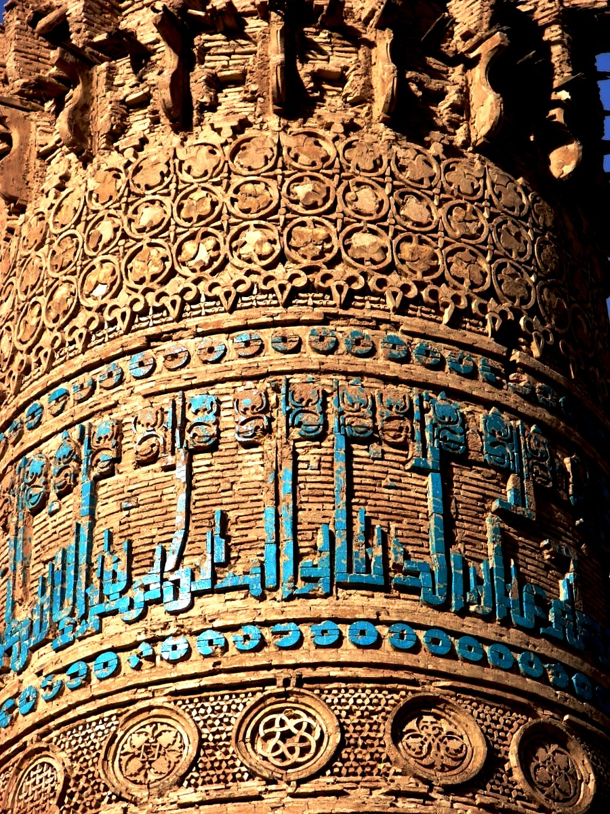
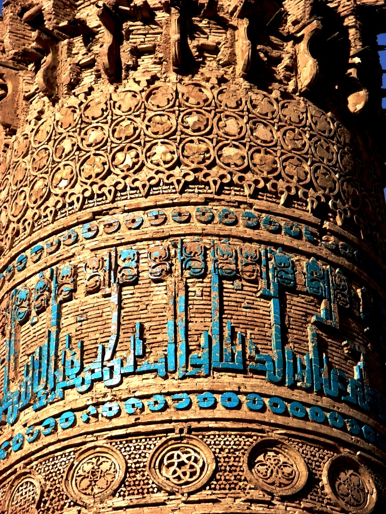

В эпоху саманидов в долинах Ферганы, Кашкадарьи, Зарафшана, в Чаче, Хорезме и Хорасане земледелие было высоко развито. Выращивали пшеницу, ячмень, рис, просо, лён, кунжут, хлопок, коноплю, горох, маш, чечевицу, лю- церну и другие культуры. Эффективная обработка земли позволяла получать хороший урожай. И в садоводстве, особенно ви- ноградарстве и бахчеводстве, урожай был таким же. Выращивали десятки сортов винограда, яблок, персиков, абрикосов, груш, инжира, айвы, вишни, сливы, граната, миндаля, грецких орехов, из овощей тыкву, дыни (особенно знамениты были бухарские дыни), баклажаны, морковь и лук. Земельный налог – харадж, поступающий в казну, представлял солидную часть бюджета государства, поэтому саманиды особое значение придавали развитию земледелия в стране.

Основное занятие - земледелие, садоводство и бахчеводство. Город - минареты, мечети, медресе, мавзолеи, мастерские, караван-сараи. Шаш - знаменит изделиями из кожи и обувью. Самарканд - высококачественная бумага. Илак - добывали серебряные и свинцовые руды для чеканки монет. Хорезм - развивалось судостроение. Харадж - основной налог (поземельный). Зандана - около Бухара - ткань занданачи. Вадори - около Самарканда - ткань вадори. Саррофлик - чеки для внешней торговли. Чек - в переводе с персидского - «доверие». Фельс - мелкая медная монета у Саманидов. Дирхем - серебряная монета. Майолика - изделия из обожженной глины, покрытые цветной глазурью. Рабат - пригород или укрепленная резиденция у арабов. 33 УРОК. 38 Караван-сарай - гостиница, место для отдыха караванов. Кырк-кыз - крепости возле Термеза. Кават-кала - крепость в Хорезме. Медресе ( араб. - место учения ) - мусульманское среднее и высшее учеб- ное заведение. Визирь - управляющий диваном. Улемы - ученые теологи. Хаджиб - воинское звание. Хонака - обитель для странников при мечети. Шейхуль-уль-ислам или устоды (наставники) - деятели науки и религии. Хатибы - проповедники в мечети.

В 962–963 гг. наместником области Газна был назначен военачальник Алп тегин. Стремясь са- мостоятельно управлять Газной и Кабулом, он взял в свои руки управление государством Газневидов. Столицей этого молодого тюркского государства стал город Газна, отсюда и термин газ- невиды. Политический ав- торитет газневидов возрос при Себук тегине (977–997), он был признан саманидами. Себук тегин был выходцем из тюркского рода Барсхан с бе- регов Сырдарьи, в молодости попал в плен и был продан в рабство. Алптегин, военачаль- ник саманидов, взял его под свою опеку. Себук тегин правил Газной и её окрестностями в качестве наместника самани- дов. К этому времени династия саманидов находилась в кри- зисе, поэтому хотя Себук тегин официально был наместником, фактически он действовал как независимый правитель. Именно отважный полко- водец Себук тегин помог са- манидам в борьбе с врагом и был удостоен почетного титула Наср-ад- дин-Даул (защитник веры и государства). При сыне Себук тегина Махмуде Газневи территория государства расширилась, оно превра- тилось в одно из самых могущественных на Восто- ке. Махмуд Газневи сумел отвоевать у саманидов Хорасан. Багдадский халиф пожаловал ему по- чётный титул «Ямин уд-даула и амин уль-милла» (правая рука мусульманского государства и благо- получия нации) и послал грамоту с признанием его власти над Хорасаном, знамя и барабан. Это озна- чало полную самостоятельность государства Мах- муда Газневи. Со своей стороны Махмуд Газневи официально признал халифа аббасидов и ценил его как потомка пророка.

962 г. - наместник области Газна Алп тегин основал государство Газневидов. Столица - Газна. Себук тегин - 977-997 - признан Саманидами как независимое государство. 997 г. - Махмуд Газневи - наивысший расцвет - присоединил Хорасан. При Махмуде Газневи - полная самостоятельность государства. 37 УРОК. 40 1006 и 1008 гг. - караханиды вторгаются в Хорасан. Махмуд Газневи - изгоняет караханидов их из Хорасана. 1017 г. - Махмуд Газневи - побеждает хорезмийское войско в битве под Хазараспом. Газна - привезены ученые и деятели культуры - в том числе Абу Райхан Беруни. Газневи присоединил - Чаганиан, Кобадиан, Хутталян, Хамадан, Исфахан и Рей. Хутба - молитва во время пятничного намаза. Военачальники - хаджибы. Правитель вилоята - вали. Правитель области - амид. Комендант крепости - кутвал. Управляющий диваном - сахиб диван. Крупные города - Газна, Балх, Нишапур, Лахор. Высший военачальник - салар. Средний военный чин - сарханг.